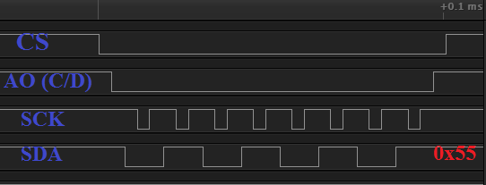
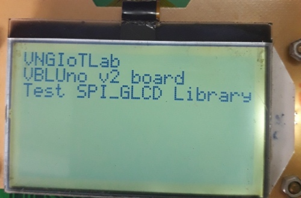
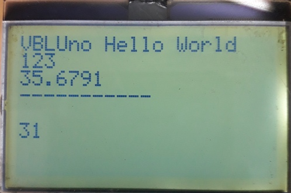

1. Mục đích
- Làm chủ giao tiếp mạch VBLUno với màn hình GLCD 128x64 (loại tháo ra từ máy GPhone)
- Ghi chú:
- Hướng dẫn này chỉ làm việc với chế độ màn hình là Text mode
- Cần cập nhật version mới nhất của thư viện Arduino cho VBLUno.
2.Giới thiệu GLCD
Đây là GLCD được tháo ra từ các máy Gphone, giá thành rẻ, có thể tìm ở các bãi rác điện tử. Đặc điểm:
- Giao tiếp: SPI
- Điện áp: 2.5v - 3.3v
- Chế độ: Graphic, Text
- Pixel: 128 x 64
Hình ảnh thực tế:

3.Bảng kết nối tín hiệu
| TT | Chân | Kết nối với mạch VBLUno |
|---|---|---|
| 1 | GND | GND |
| 2 | /RST | +3.3V |
| 3 | SCK | 13 |
| 4 | AO(C/D) | 12 |
| 5 | LEDA | +3.3V |
| 6 | LEDK | GND |
| 7 | SDA | 11 |
| 8 | /CS | 10 |
| 9 | VCC | +3.3V |
| 10 | GND | GND |
4.Lập trình trên Arduino IDE
4.1. Thư viện
-
VNGIoTLab tham khảo và cải tiến (thêm các hàm API) từ thư viện gốc của bạn Vũ Thái tại sangtaoclub.net
-
Thư viện đi kèm:
Gphone_LCD- Header:
glcd_spi.h - Source:
glcd_spi.cpp
- Header:
Ghi chú: Các bạn tải thư viện tại ĐÂY và copy đến thư mục libraries của Arduino trên máy tính. Ví dụ: C:\Users\NoName\Documents\Arduino\libraries
- Các hàm API:
/*
* @brief Init for SPI GLCD
* @params CS_: CS pin on VBLUno
* @params SCK_: SCK pin on VBLUno
* @params SDA_: SDA pin on VBLUno
* @params AO_: AO pin on VBLUno
* @params GRAPHIC_MODE_: GLCD Mode
* 0: Text mode
* 1: Graphic mode (not support in this library)
*/
void InitLcd(int CS_, int SCK_, int SDA_, int AO_, int GRAPHIC_MODE_);
/*
* @brief Test function
*/
void TestLcd(void);
/*
* @brief Clear all screen
*/
void ClearLcd(void);
/*
* @brief Print a string on screen
* @params row: 0-7
* @params col: 0-20
* @params stringdata: a string (1 to 21 character)
* @note Size of stringdata is not greater than 21 character
*/
void PrintLcd(int row, int col, char* stringdata);
/*
* @brief Print a string on screen
* @params row: 0-7
* @params col: 0-20
* @params num: integer number
*/
void PrintIntLcd(int row, int col, int num);
/*
* @brief Print a string on screen
* @params row: 0-7
* @params col: 0-20
* @params doublenum: double number
* @note precision is %0.4f
*/
void PrintFloatLcd(int row, int col, double doublenum);
4.3. Giản đồ tín hiệu của thủ tục ghi dữ liệu vào GLCD:
(Đo bằng thiết bị Logic analyzer) 
5. Ví dụ
5.1. Arduino Code
#include <glcd_spi.h>
#define PIN_GLCD_CS 10 //LOAD
#define PIN_GLCD_SDA 11 //DIN
#define PIN_GLCD_AO 12 //AO
#define PIN_GLCD_SCK 13 //CLK
#define GRAPHIC_MODE 1
#define TEXT_MODE 0
int num_count = 0;
// the setup function runs once when you press reset or power the board
void setup() {
pinMode(LED, OUTPUT);
delay(1000);
/*Init GLCD*/
InitLcd(PIN_GLCD_CS, PIN_GLCD_SCK, PIN_GLCD_SDA, PIN_GLCD_AO, TEXT_MODE);
/*Run test function*/
digitalWrite(LED, HIGH);
TestLcd();
delay(2000);
ClearLcd();
PrintLcd(0, 0, "VBLUno Hello World");
PrintIntLcd(1, 0, 123);
PrintFloatLcd(2, 0, 35.6791);
PrintLcd(3, 0, "-----------");
}
// the loop function runs over and over again forever
void loop() {
delay(1000);
PrintIntLcd(5, 0, num_count);
if(num_count++ > 10000){
num_count = 0;
}
}
5.2. Kết quả

